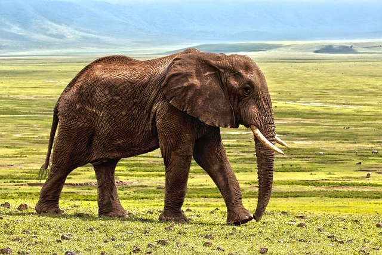

Цікаві Факти про Черепах
Черепаха найдавніша рептилія на Землі. Перша відома науці черепаха з'явилися 220 мільйонів років тому. Розміри...
Читати
Цікаві Факти про Тигрів
Зіниці у тигрів не вертикальні, як у домашніх кішок, а круглі. Це зумовлено тим, що тигр не веде нічний, а сутінковий спосіб життя.
Читати
Панда - унікальна тварина.
В Стародавньому Китаї вважали, що хутро панди має магічну силу і захищає від злих духів. Через полювання...
Читати

Цікаві Факти про Слонів
Для спілкування слони сурмлять хоботом, ці звуки поширюються досить далеко й...
Читати
15 Цікавих Фактів про Котів
Зір кота одночасно і кращий, і гірший від людського. Представники котячих набагато краще бачать у темноті. Але вони не...
Читати